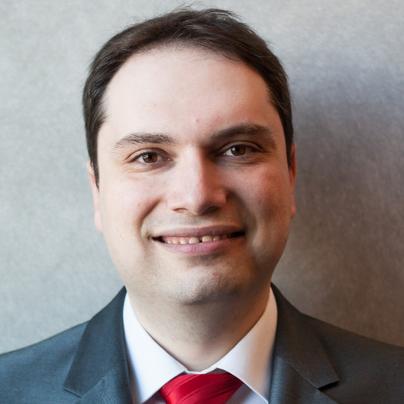

| Name | Alter | nationalität | Job |
|---|---|---|---|
| Dmitri Bountsman | 42 | Deutscher | Informaticker |
Bunzmann kam 1992 als 10-Jähriger mit seinem Vater als Kontingentflüchtling von Usbekistan nach Berlin. Dort kümmerte sich der Vorsitzende des Schachvereins SVg Lasker-Steglitz um die Belange der Bunzmanns, unter anderem konnten Dimitris Mutter und Großeltern nachreisen, mit Sergei Kalinitschew wurde ihm sein Trainer und späterer Sekundant zur Seite gestellt. 1996 wechselte Bunzmann zu den Schachfreunden Neukölln, mit dem ab 1997 in der deutschen Schachbundesliga spielte, 2001 zu den Stuttgarter Schachfreunden. Seit 2004 spielte er beim SC Bann, in der Saison 2005/2006 einer der Aufsteiger in die Schachbundesliga. 2007/2008 spielte er für den TSV Bindlach. In Österreich ist er seit 2005 beim SK Maria Saal gemeldet, kam aber zuletzt in der Saison 2008/09 zum Einsatz. In der französischen Mannschaftsmeisterschaft spielte Bunzmann in der Saison 2001/02 bei Echecs Sautron, von 2005 bis 2007 bei Cavalier Bleu Drancy und in der Saison 2013/14 bei Les Tours de Haute Picardie.
Bunzmann galt in den 1990er Jahren als großes Talent im deutschen Jugendschach. Bei der Weltmeisterschaft der unter 12-Jährigen in Ungarn belegte Bunzmann 1994 den fünften Platz (mit einem Sieg in der Schlussrunde wäre ein erster Platz möglich gewesen).[1] 1995 in Brasilien kam er auf Platz 7 bei der U14-Weltmeisterschaft.[2] Mit 14 Jahren wurde er 1996 Vizemeister bei der deutschen U20-Meisterschaft. Im gleichen Jahr belegte er in Spanien den vierten Platz bei der WM der unter 14-Jährigen, hinter den heutigen Weltklassespielern Gabriel Sarkissjan, Lewon Aronjan, Francisco Vallejo Pons noch vor Étienne Bacrot.[3] 1998 wurde er Sechster hinter Sjarhej Asarau bei den Jugendweltmeisterschaften U16 in Oropesa del Mar (Spanien).[4] Im Oktober 1999 verlor Bunzmann in Hamburg einen Wettkampf gegen den 2½ Jahre älteren Péter Lékó mit 4:2 (+0 =4 −2).[5] Lékó gehörte schon damals mit einer Elo-Zahl von 2701 zur absoluten Weltspitze. Bunzmann trägt seit 2003 den Großmeister-Titel.